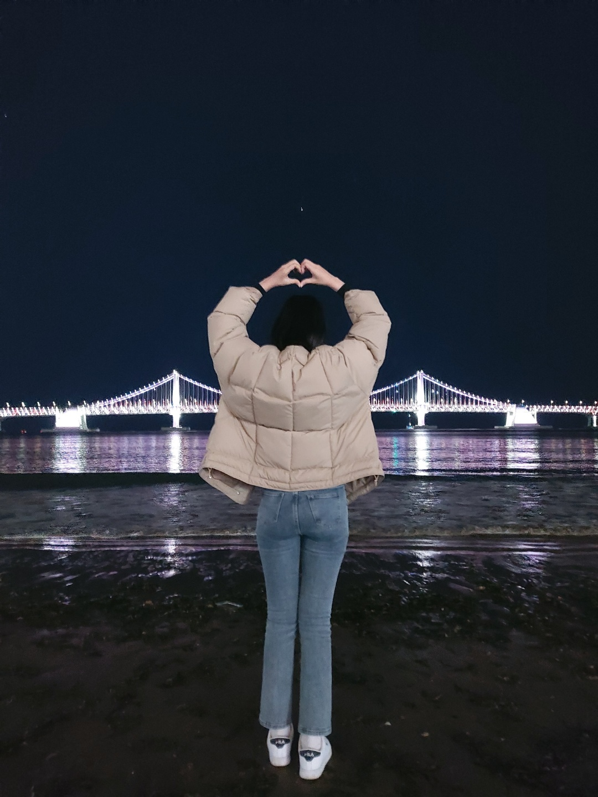

우리는 버킷리스트를 작성했었는데 그 중에 여행이 있었다.
첫 여행으로 부산을 가서 1박을 했다.
사실 여행을 많이 가보지 않아서 뭘 해야할지 뭘 먹어야 할지 잘 몰랐다.
하지만 우리는 호텔도 잡고 맛있는 음식도 먹고 바다도 구경했다.
물론 너무나 즐겁고 행복했지만 아쉬웠던건 가까운 거리가 아니라
생각보다 시간이 너무 없었다는 것이였다.
가서 바다를 구경하면서 사진을 찍고 밥을 먹으니 밤이 되었고
호텔로 들어갔다, 그치만 우리의 여행은 여기서 끝이 아니었다.
편의점에서 사온 술과 바로 앞이 바다라는 것과
그녀와 밤을 함께한다는 사실이 내 마음에 파도를 일으켰다.
그러나.. 나는 전날 너무 긴장한 나머지 잠을 설치고 하루동안 고생한게 쌓여서 잠이 들었다.
거사를 치렸어야 했는데.. 너무 후회스럽다.
이 여행으로 느낀점은 다음에는 2박으로 가야겠다는 생각이 들었다.
